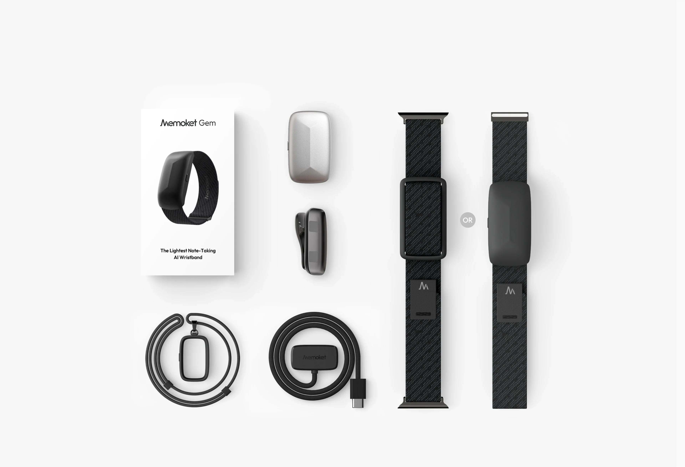
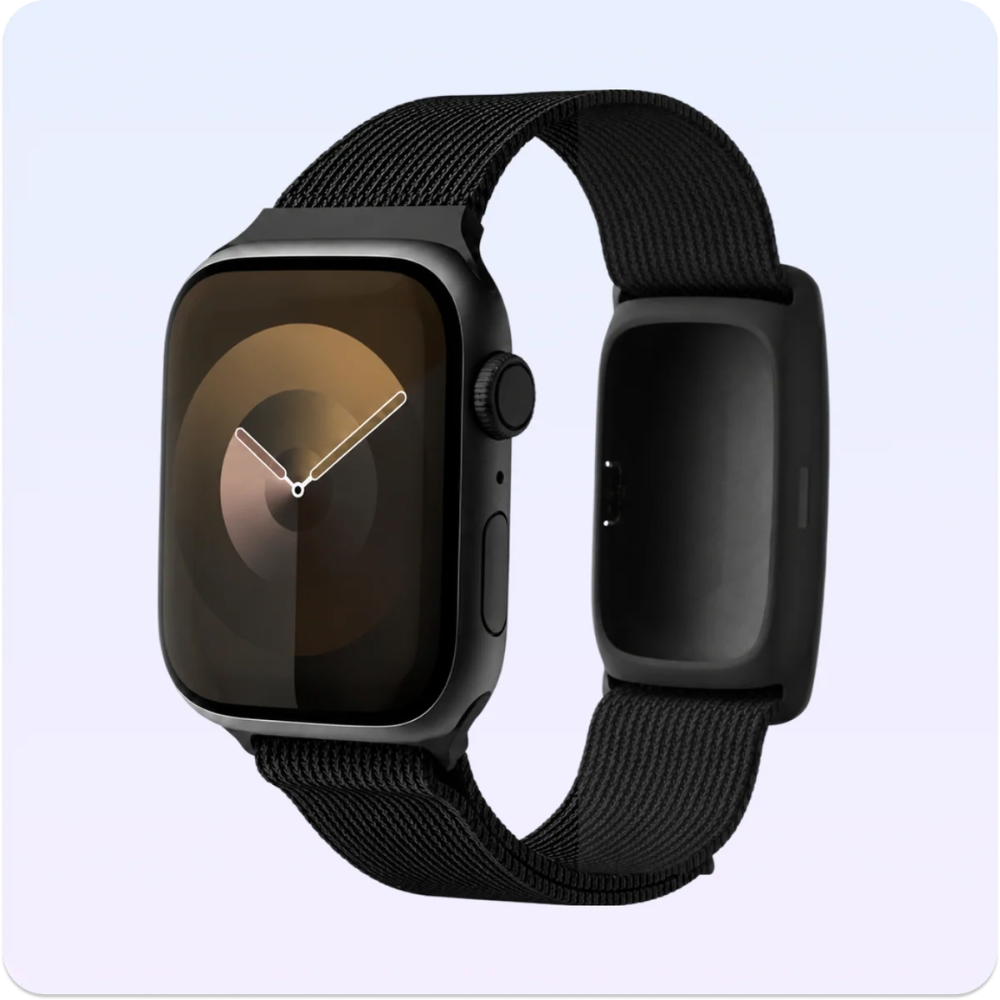

Menos pasos para empezar
El usuario puede comenzar a grabar con una sola acción física, sin necesidad de abrir una aplicación y buscar diferentes opciones.
Memoket Gem es una grabadora inteligente muy versátil presentada en 2026. Permite capturar conversaciones mediante un botón físico y posteriormente convertir las grabaciones en transcripciones y asi poder hacerlas resúmenes y lo que quieras mediante su aplicación.
Este dispositivo resulta interesante para la Interacción Persona-Ordenador porque combina una interfaz física muy sencilla con un sistema digital encargado de procesar y organizar la información de forma sencilla y cómoda.
Relación con IPO Conocer el dispositivo
Peso aproximado
Grabación continua máxima
Almacenamiento aproximado de audio
Transcripción mensual incluida
PRESENTACIÓN
Memoket Gem es un dispositivo portátil diseñado para grabar reuniones, conversaciones sin necesidad de utilizar el teléfono.
Integra dos micrófonos, almacenamiento interno y un botón físico que permite comenzar o detener una grabación de forma rápida.
Después, las grabaciones pueden transferirse a la aplicación de Memoket, donde pueden convertirse en transcripciones y resúmenes.

FUNCIONAMIENTO
El usuario mantiene pulsado el botón durante aproximadamente un segundo.
Una vibración y una luz roja indican que la grabación ha comenzado. Cuando termina, el dispositivo realiza dos vibraciones y la luz se apaga.
El audio queda almacenado en el dispositivo y puede transferirse posteriormente al teléfono.
Desde la aplicación se pueden generar transcripciones, resúmenes y tareas a partir de la grabación.
Es importante distinguir entre el almacenamiento de audio y los minutos de transcripción incluidos en el servicio.
INTERACCIÓN PERSONA-ORDENADOR
La Interacción Persona-Ordenador estudia cómo se comunican las personas con los sistemas informáticos.
Memoket Gem resulta interesante porque separa la interacción en dos partes: una interacción física sencilla mediante el dispositivo y una interacción posterior más compleja mediante la aplicación.
El usuario puede comenzar a grabar con una sola acción física, sin necesidad de abrir una aplicación y buscar diferentes opciones.
La luz y las vibraciones permiten saber si la grabación ha comenzado o terminado.
Esto esta relacionado con la visibilidad del estado y retroalimentación.
Las transcripciones y los resúmenes permiten recuperar información de una conversación sin depender de nuestra memoria.
El software permite consultar información generada a partir de diferentes grabaciones realizadas anteriormente.
Una interfaz útil no consiste únicamente en añadir funciones, sino también en reducir el esfuerzo necesario para utilizarlas.
FORMAS DE USO
Memoket Gem puede utilizarse en diferentes formas dependiendo de las preferencias del usuario y del contexto.
El dispositivo puede utilizarse como una pulsera independiente.

Existe una versión que permite llevar Memoket Gem y un Apple Watch en la misma muñeca.

El dispositivo también puede sujetarse a la ropa mediante un accesorio.

También existe la posibilidad de llevarlo como colgante.

La correa compartida con Apple Watch es una integración física a partir de un accesorio. No significa que ambos dispositivos puedan ser dependientes.
EVOLUCIÓN
Memoket Gem no inventa la grabación de voz ni la transcripción automática. Su principal evolución consiste en combinar grabación inmediata, formato ponible y procesamiento mediante software.
ANTES
Permitían almacenar audio, pero para localizar información concreta era necesario volver a escuchar las grabaciones.
DESPUÉS
La grabación pasó a integrarse en aplicaciones móviles, aunque normalmente era necesario abrir la aplicación y navegar por su interfaz.
MÁS RECIENTEMENTE
Aparecieron sistemas capaces de convertir automáticamente las grabaciones en texto y resúmenes.
2026
Combina captura mediante un botón físico, formato ponible y procesamiento posterior mediante inteligencia artificial.
VALORACIÓN
Incluye 300 minutos mensuales de transcripción. Es el que viene con la compra del dispositivo.
Incluye una cantidad superior de minutos de transcripción mediante una suscripción opcional.
Permite un uso mucho más amplio de las funciones de transcripción mediante un plan de pago.
El principal interés de Memoket Gem no consiste únicamente en grabar audio, sino en facilitar el paso entre una conversación del mundo físico y la información digital que puede utilizarse posteriormente.
Su utilidad depende tanto del diseño físico del dispositivo como de la calidad y condiciones del software asociado.
FUENTES
Las fotografías utilizadas pertenecen al fabricante.